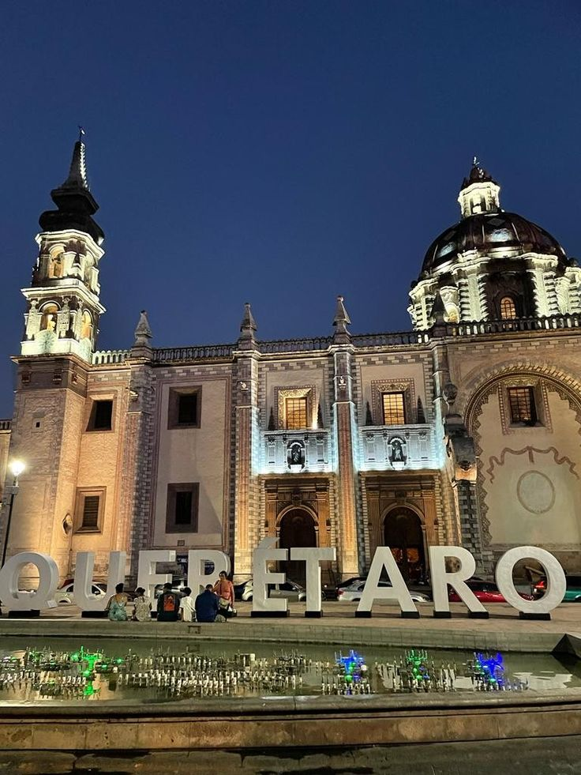
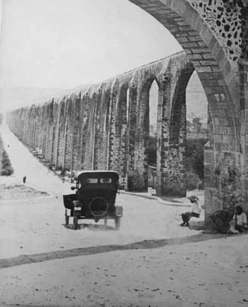
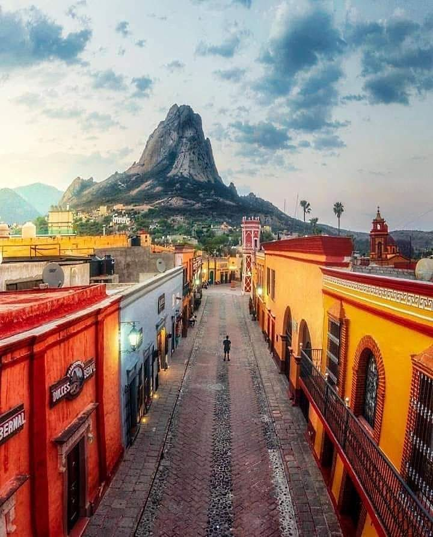
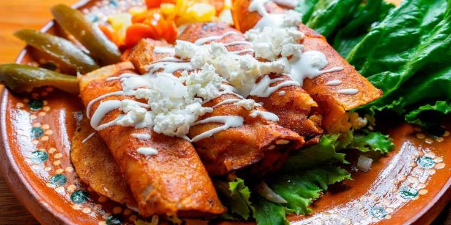
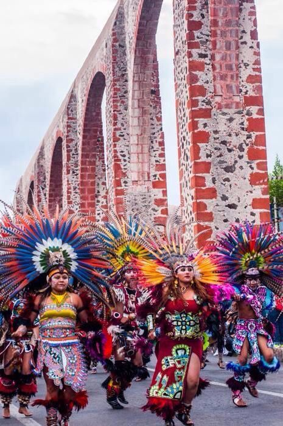
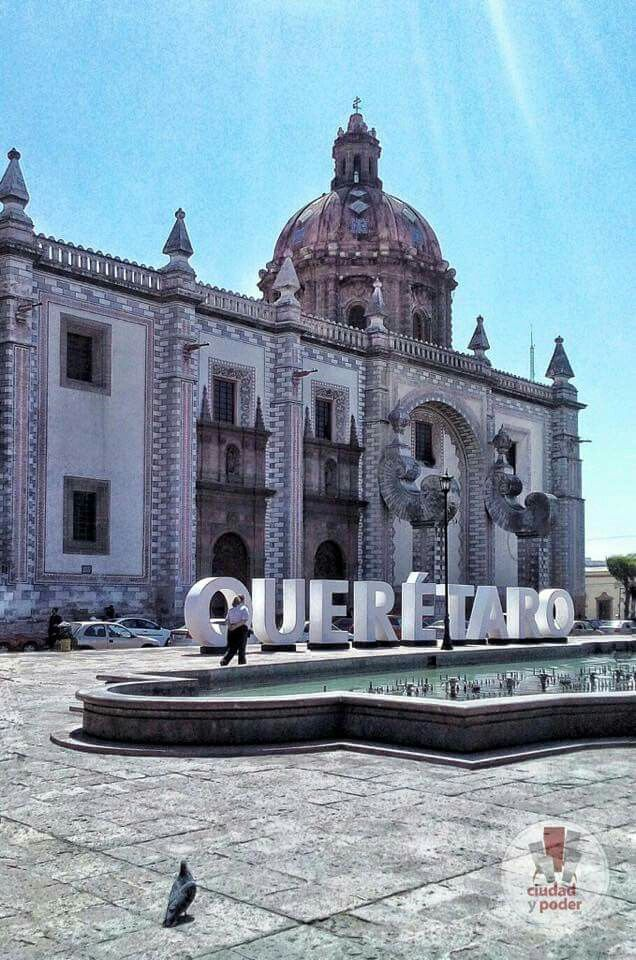

Querétaro es uno de los destinos más importantes de México.

Más información →Fundado en 1531, fue clave en la independencia.

Más información →Acueducto y Peña de Bernal.

Más información →Enchiladas, gorditas y más.

Más información →Festivales y tradiciones.

Más información →Visita Querétaro y vive una experiencia inolvidable.
